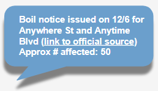

Text "join" to 833-366-2498 and get boil-water SMS alerts sent to your phone
(or tap here on smartphone & send)
jxn[boilalert.org]Text "join" to 833-366-2498 and get boil-water SMS alerts sent to your phone(or tap here on smartphone & send)  contact meAs a fellow Jacksonian, I appreciate your feedback - e-mail me. shareSpread this service to your friends via text and/or share on social media. |
the problemThere are serious efforts to address the water issues in Jackson, MS but when there is a boil-water notice it can be challenging to get informed, risking your health or the health of your customers. the solutionI monitor a number of internet sources to catch timely information. An SMS alert will automatically be pushed to your phone when a notice is issued or lifted. love this?This service is free to you and operates on a not-for-profit basis, sustained solely by my individual efforts and personal funds to manage ongoing data, carrier, and operational expenses. If you find value in this initiative, your contribution or your help connecting with a funding partnership will be greatly valued, enabling me to maintain and enhance its functionality. 
|
See sections below. I simply provide the service of monitoring various public channels and promptly sending SMS notifications when notices are issued or lifted. Don't shoot the messenger.
By sending the "JOIN" text, you are opting in to receive SMS communications from boilalert.org. You may receive updates, and important information via text message, but not promotions. Messages will not be sent during "quiet hours" of 9pm-8am CST. You can stop receiving messages at any time by texting 'STOP'. Your privacy is important to me, and your information (in this case, phone number only) will not be shared with third parties.You can enjoy the service without any cost, but remember that standard SMS charges from your carrier may still apply.
boilalert.org is a notification service that broadcasts boil water notice information found from publicly available sources on the internet to its subscribers. I provide this service as a best-effort to keep subscribers informed about boil water notices in your area. Please note, while the information I provide is based on external sources that are supposed to be official and reputable I do not personally generate nor personally verify the details found in those public notices. boilalert.org is not affiliated with any public health or government organizations and is not legally liable for the accuracy, timeliness, or completeness of the information provided. It is essential that you do your own research and follow the guidance of your local authorities and health services in response to boil water notices. For any concerns or questions related to water notices, please contact your local government or health department. Thank you for using boilalert.org to stay informed.